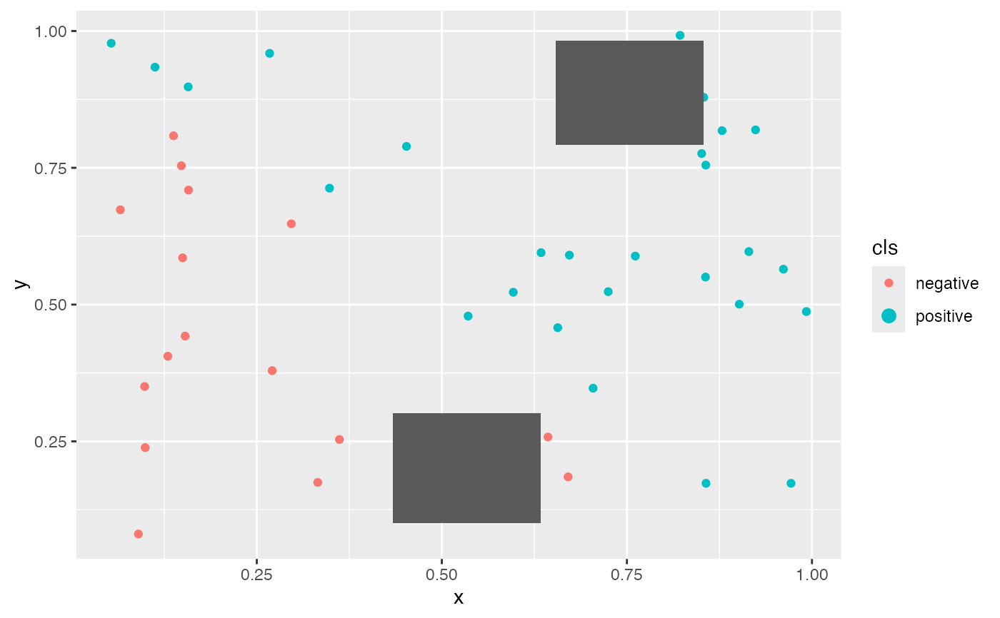

Visualize the anchor in two dimensional space
Arguments
- anchors
The result of
make_anchors()function call.- dataset
The dataset passed to
make_anchors()- instance
The point of interest
Examples
set.seed(145)
dataset <- data.frame(
x = runif(50),
y = runif(50)
)
dataset$cls <- ifelse(
dataset$x + dataset$y > 1,
"positive",
"negative"
)
# A simple model function.
model_func <- function(data) {
ifelse(data$x + data$y > 1, "positive", "negative")
}
# Generate anchors for two observations.
instance <- c(1, 2)
result <- make_anchors(
dataset = dataset,
cols = c("x", "y"),
instance = dataset[instance, c("x", "y")],
model_func = model_func,
class_col = "cls",
n_bins = 2,
seed = 145
)
#> INFO [2026-08-26 23:26:28] setting up bin edges
#> INFO [2026-08-26 23:26:28] setting lower bounds
#> INFO [2026-08-26 23:26:28] Have 1 lower bounds with 0.653931205254048
#> INFO [2026-08-26 23:26:28] setting upper bounds
#> INFO [2026-08-26 23:26:28] Have 1 upper bounds with 0.853931205254048
#> INFO [2026-08-26 23:26:28] setting lower bounds
#> INFO [2026-08-26 23:26:28] Have 2 lower bounds with 0.887393567832187
#> INFO [2026-08-26 23:26:28] Have 2 lower bounds with 0.792393567832187
#> INFO [2026-08-26 23:26:28] setting upper bounds
#> INFO [2026-08-26 23:26:28] Have 1 upper bounds with 0.982393567832187
#> INFO [2026-08-26 23:26:28] received precisions 1 , NA
#> INFO [2026-08-26 23:26:28] found new max_reward -1 and node 1:1:1:1
#> INFO [2026-08-26 23:26:28] max_values
#> INFO [2026-08-26 23:26:28] 1:1:2:1
#> INFO [2026-08-26 23:26:28] received precisions 1 , NA
#> INFO [2026-08-26 23:26:28] max_values
#> INFO [2026-08-26 23:26:28] 1:1:2:1
#> INFO [2026-08-26 23:26:28] setting lower bounds
#> INFO [2026-08-26 23:26:28] Have 1 lower bounds with 0.434021162660792
#> INFO [2026-08-26 23:26:28] setting upper bounds
#> INFO [2026-08-26 23:26:28] Have 1 upper bounds with 0.634021162660792
#> INFO [2026-08-26 23:26:28] setting lower bounds
#> INFO [2026-08-26 23:26:28] Have 1 lower bounds with 0.101150634791702
#> INFO [2026-08-26 23:26:28] setting upper bounds
#> INFO [2026-08-26 23:26:28] Have 1 upper bounds with 0.301150634791702
#> INFO [2026-08-26 23:26:28] received precisions 1 , NA
#> INFO [2026-08-26 23:26:28] found new max_reward -1 and node 1:1:1:1
#> INFO [2026-08-26 23:26:28] max_values
#> INFO [2026-08-26 23:26:28] 1:1:1:1
# Visualise the resulting anchors.
plots <- vis_anchor(
anchors = list(result),
dataset = dataset,
instance = 1
)
plots[[1]]
